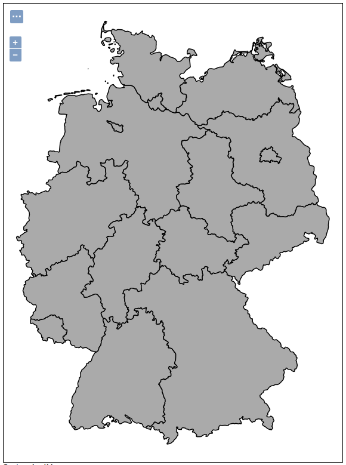
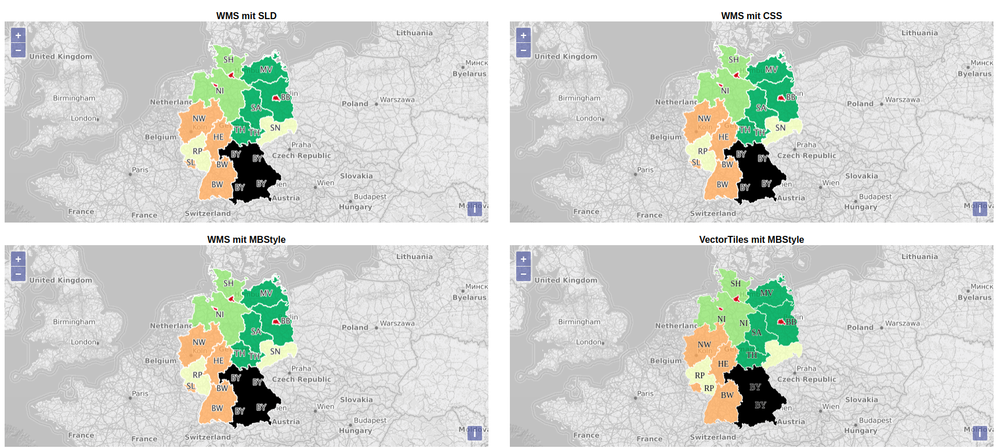
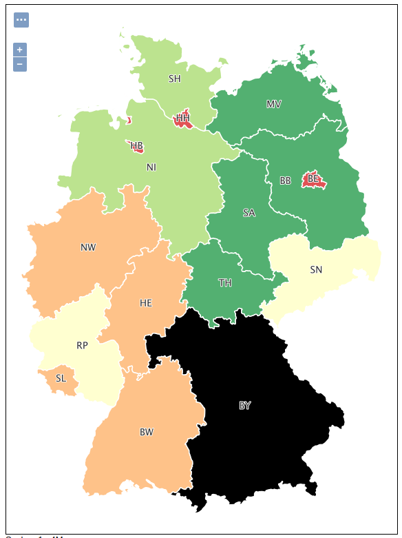
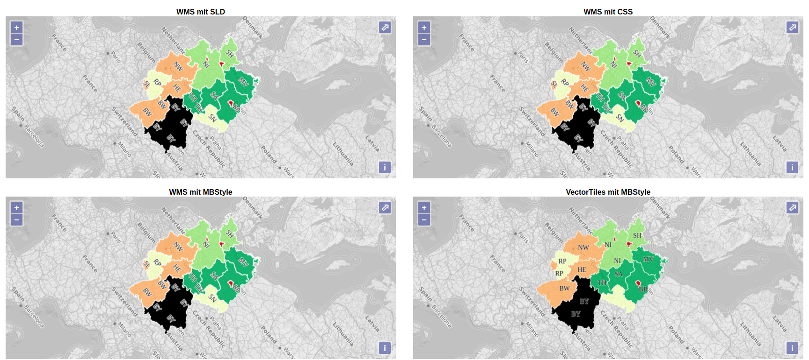
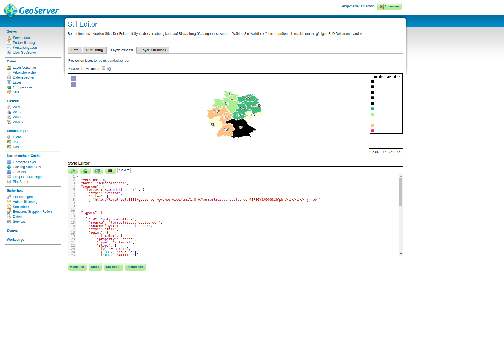
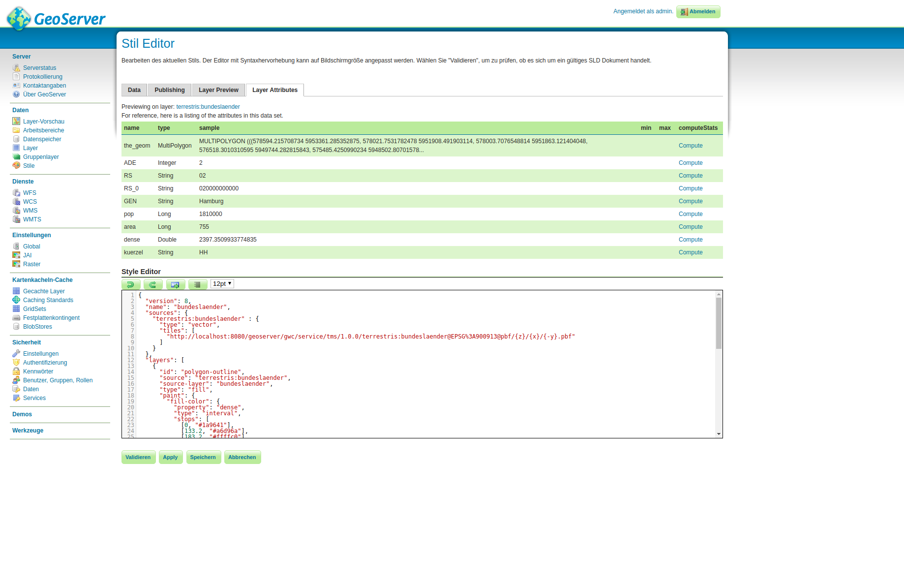
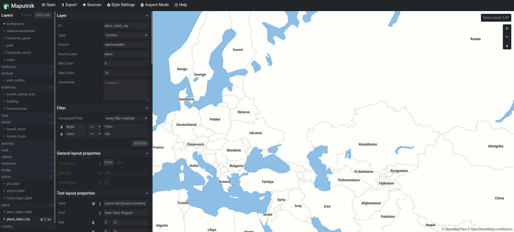

Karten gestalten
im GeoServer
SLD, CSS und MBStyles
Johannes Weskamm & Anna Rieger
terrestris GmbH & Co. KG
FOSSGIS 2018, Bonn, 23.03.2018
Gliederung
- Über…
- Karten stylen - aber wie?
- Beispiele
- Fazit
Johannes Weskamm

- Diplom-Geograph
- Softwareentwickler @terrestris
- Hauptverantwortlicher ows.terrestris.de
- Kernentwickler GeoExt, SHOGun, react-geo
terrestris
- terrestris.de
- OpenSource GIS aus Bonn
- Entwicklung, Projekte & Support/Schulung
- Beratung, Planung, Implementierung & Wartung
Teil des Teams werden?
- Softwareentwickler/in
- GIS Consultant
- Praktikanten / betreute Abschlussarbeiten
Details gerne am terrestris Stand
GeoServer Docker zum selbst probieren
$ cd /tmp && \
git clone git@github.com:terrestris/docker-geoserver.git && \
cd docker-geoserver && \
git checkout styling-examples && \
docker build -t terrestris/geoserver:styling --no-cache . && \
docker run -d -p 8080:8080 terrestris/geoserver:styling
Lokaler GeoServer: http://localhost:8080/geoserver
Lokales Beispiel: Alle 4 zusammen
Online Beispiel: Alle 4 zusammen
$ cd /tmp && \
git clone git@github.com:terrestris/docker-geoserver.git && \
cd docker-geoserver && \
git checkout styling-examples && \
docker build -t terrestris/geoserver:styling --no-cache . && \
docker run -d -p 8080:8080 terrestris/geoserver:styling
Karte stylen - aber wie?
Übersicht über existierende Ansätze
- SLD
- YSLD
- CSS
- MBStyle
SLD
bundeslaender-sld
bundeslaender-sld
name
#000080
#FFFFFF
first
- Styled Layer Descriptor
- OGC Standard
- v1.1.0
- XML basiert
YSLD
name: bundeslaender-ysld
feature-styles:
- name: name
rules:
- scale: [min, max]
symbolizers:
- polygon:
stroke-color: '#FFFFFF'
stroke-width: 1
fill-color: '#000080'
- Boundless Server Composer
- einfache Lesbarkeit
- kompakt & flexibel
- Kompatibel mit SLD
- YAML basiert
- GeoServer Extension
CSS
* {
fill: #000080;
stroke: #FFFFFF;
stroke-width: 1;
}
- gute Lesbarkeit
- kompakt & flexibel
- Kompatibel mit SLD
- CSS basiert
- GeoServer Extension
MBStyle
{
"version": 8,
"name": "bundeslaender-mbstyle",
"layers": [
{
"id": "polygon-outline",
"type": "fill",
"paint": {
"fill-outline-color": "white",
"fill-color": "#000080"
}
}
]
}
- Mapbox Style Specification
- gute Lesbarkeit
- sehr umfangreiche API
- Kompatibel mit SLD
- JSON basiert
- GeoServer Extension
Beispiele
Randbedingungen

| Regel | Attribut | Klassen |
|---|---|---|
| Bevölkerungsdichte | {dense} |
|
| Bundeslandname | {GEN} | Bayern / Rest |
| Labels | {kuerzel} | alle |
Bundesländer mit SLD
complex-mbstyles
complex-mbstyles
polygon-outline
MBStyle polygon-outline
Generated for terrestris:bundeslaender
POLYGON
polygon-outline
dense
#1A9641
0
#1A9641
133.2
#A6D96A
183.2
#FFFFC0
294.2
#FDAE61
524.5
#D7191C
succeeding
0.75
#FFFFFF
0.75
bayern-spezial
MBStyle bayern-spezial
Generated for terrestris:bundeslaender
POLYGON
bayern-spezial
GEN
Bayern
#000000
#FFFFFF
label
MBStyle label
Generated for terrestris:bundeslaender
ANY
label
kuerzel
none
Dialog
14
normal
normal
0.5
0.5
0
-1
0
1
#FFFFFF
250
true
none
true
0
2.0
true
Bundesländer mit CSS
* {
fill-opacity: 0.75;
stroke: #ffffff;
stroke-width: 1;
label: [kuerzel];
label-anchor: 0.5 0.5;
font-family: Dialog;
font-size: 14px;
font-fill: #333333;
halo-color: #ffffff;
halo-radius: 1;
}
[dense<133.2] {
fill: #1a9641;
}
[dense>=133.2] [dense<183.2] {
fill: #a6d96a;
}
[dense>=183.2] [dense<294.2] {
fill: #ffffc0;
}
[dense>=294.2] [dense<524.5] {
fill: #fdae61;
}
[dense>=524.5] {
fill: #d7191c;
}
[GEN='Bayern'] {
fill: #000000;
fill-opacity: 1;
}
Bundesländer mit MBStyle
{
"version": 8,
"name": "bundeslaender",
"sources": {
"terrestris:bundeslaender" : {
"type": "vector",
"tiles": [
"http://localhost:8080/geoserver/gwc/service/tms/1.0.0/terrestris:bundeslaender@EPSG%3A900913@pbf/{z}/{x}/{-y}.pbf"
]
}
},
"layers": [
{
"id": "polygon-outline",
"source": "terrestris:bundeslaender",
"source-layer": "bundeslaender",
"type": "fill",
"paint": {
"fill-color": {
"property": "dense",
"type": "interval",
"stops": [
[0, "#1a9641"],
[133.2, "#a6d96a"],
[183.2, "#ffffc0"],
[294.2, "#fdae61"],
[524.5, "#d7191c"]
]
},
"fill-outline-color": "white",
"fill-opacity": 0.75
}
},
{
"id": "bayern-spezial",
"source": "terrestris:bundeslaender",
"source-layer": "bundeslaender",
"filter": ["==", "GEN", "Bayern"],
"type": "fill",
"paint": {
"fill-color": "black",
"fill-outline-color": "white"
}
},
{
"id": "label",
"source": "terrestris:bundeslaender",
"source-layer": "bundeslaender",
"type": "symbol",
"layout": {
"text-field": "{kuerzel}",
"text-font": ["Dialog"],
"text-size": 14,
"text-anchor": "center"
},
"paint": {
"text-color": "333333",
"text-halo-color": "#ffffff",
"text-halo-width": 1
}
}
]
}
Ergebnisse
Ergebnisse

Ergebnis ist zwar gleich für alle Stile, aber...
| Stil | Zeilen | Anmerkung |
|---|---|---|
| SLD | 123 |
|
| CSS | 33 |
|
| MBStyle | 63 |
|
Ergebnisse
Dokumentation
CSSMBStyle
YSLD
SLD Cookbook
Editoren - GeoServer
Editoren - GeoServer
Editoren - Maputnik (MBStyle)
https://maputnik.github.io/editor/
Vielen Dank
Fragen & Anmerkungen?
Impressum
Autor
Johannes Weskamm
terrestris GmbH & Co. KG
Kölnstr. 99
53111 Bonn
weskamm@terrestris.de
terrestris GmbH & Co. KG
Kölnstr. 99
53111 Bonn
weskamm@terrestris.de
Lizenz
Diese Folien sind unter CC BY-SA veröffentlicht.